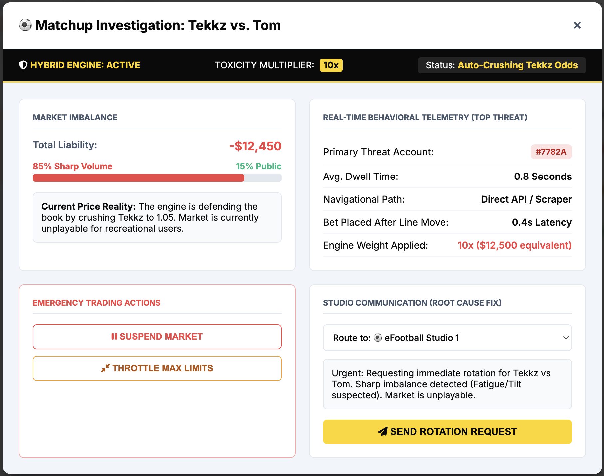

eSims Sharp Radar
Dynamic Detection & Hybrid Risk Balancing Engine
Q1 Strategy: From Passive Loss to Proactive Margin Protection
Dynamic Detection & Hybrid Risk Balancing Engine
Q1 Strategy: From Passive Loss to Proactive Margin Protection
Detecting bets placed within <0.5s of an odds movement. This identifies algorithmic sharp sniping on the fly.
Telemetry-based detection of accounts with zero dwell time and direct deep-linking to specific eSims sub-markets.
Identifying "Hive Mind" behavior: correlated bets on a single pair from disparate accounts within 15 seconds.

Traders gain immediate visibility into Toxicity-Weighted adjustments vs Market Reality.
By treating eSims markets as an exchange, our engine auto-corrects based on weight of money. We add a Toxicity Multiplier (10x) for suspected sharp bets.

| Metric | Data Point |
|---|---|
| Avg. Dwell Time | 4.2 Seconds |
| Nav. Path | Direct (Scraper Detected) |
| Volume Weight | 10x (Aggressive) |
Broken Matchup Detected: Tom is on Hour 5 of shift. Performance dropping.
Detection Accuracy
The Hybrid Engine has reduced sharp "value windows" from 12 seconds to under 0.5 seconds. This translates to an estimated saving of $14k per high-impact matchup by front-running syndicate entries.
eSims Studio Environment
When the engine is forced into "Auto-Crush" mode, the product becomes unplayable for recreational users due to extreme odds. The tool bridges this gap:
Manual Trading Adjustment
Traditional Auto-Trading
Oddin.gg Hybrid Engine
The 0.5s reaction kills the 'latency arbitrage' sharps rely on.
| Index | Category | Definition | System Action |
|---|---|---|---|
| 1 - 3 | Healthy | Balanced public money; normal dwell times. | Standard Margin |
| 4 - 7 | Warning | Weight of money skewing 70/30; unidentified fast bets. | Increase Toxicity Weight |
| 8 - 10 | Critical | Max-limit sniping; swarm detection; known sharp entries. | Auto-Crush & Rotate |
eBasketball Studio
eBasketball pairs often face "Session Drift" where defensive styles are learned by opponents over a shift. Our Radar tracks these Stylistic Gaps in real-time:
Deploy Hybrid Exchange logic for eFootball.
Launch Radar Dashboard Light Theme for Traders.
Studio API Integration for Auto-Rotations.
Full Scale to eBasketball and North American Studios.
Next Steps: Integration of Radar API with Trading Backend